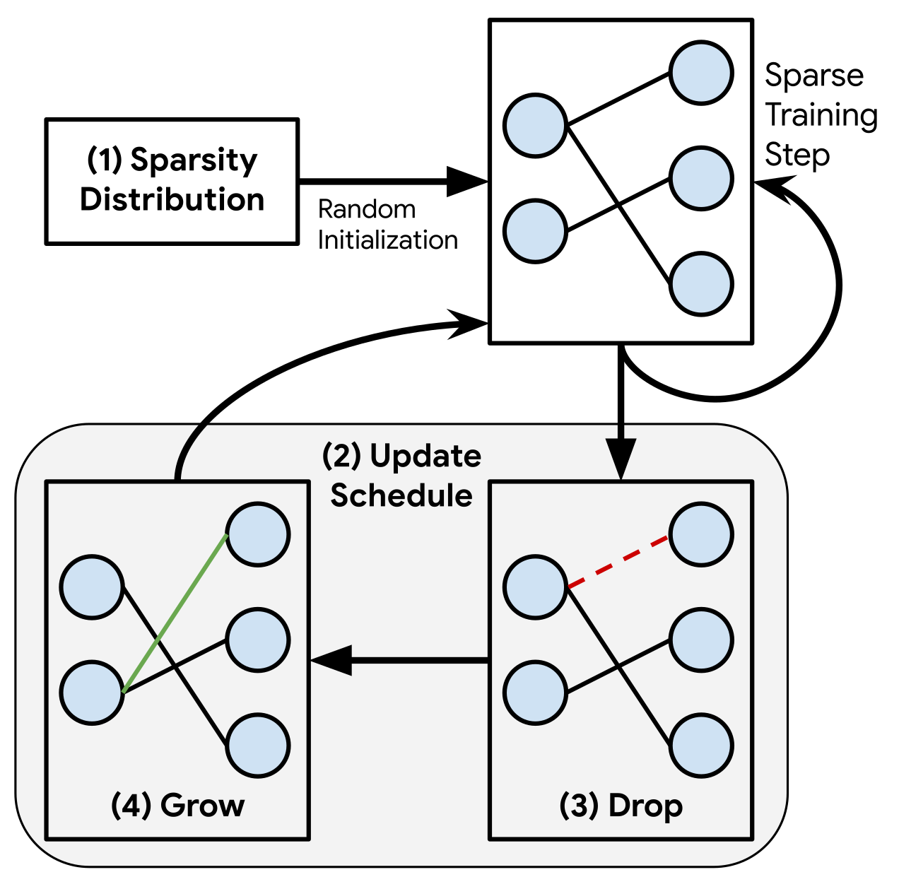

|
Research
I'm interested in computer vision, computational imaging and machine learning. Broadly, I wish
to harness a conjuction of newer hardware and smarter algorithms to tackle a variety of problems. My
undergraduate research focussed on developing deep learning techniques to recover high-quality
images from lensless cameras.
|
News
- (Jan 25th, 21) Joining UW Madison for grad school!
- (Oct 16th, 20) Our work on lensless imaging has been accepted
for
publication in IEEE TPAMI!
- (Oct 16th, 20) We placed 2nd in the ECCV Under
Display Camera Challenge
(POLED track). Paper
available
on arxiv.
- (Aug 1st, 20) Graduated from IIT Madras!
- (Apr 15th, 20) Accepted to PhD programmes at UW
Madison, CMU, USC, Rice University and
UCLA!
- (May 17th, 19) I will be interning at Prof. Ram
Nevatia's lab in USC till August
2019
|
|

|
[Reproducibility Report]: Rigging the Lottery: Making All Tickets Winners
Varun Sundar,
Rajat Vadiraj Dwaraknath
ML Reproducibility Challenge, 2020
openreview
/ bibtex
Reproducibility Report on the ICML 2020 paper, Rigging the Lottery: Making All Tickets Winners.
|
|
|
Deep Atrous Guided
Filter
for Image Restoration in Under Display Cameras
Varun Sundar*,
Sumanth Hegde*,
Divya K Raman,
Kaushik Mitra
ECCV RLQ-TOD Workshop, 2020
project page /
arXiv /
video /
bibtex
Guided Filters when incorporated in a deep network can efficiently recover severely degraded,
mega-pixel resolution images.
|
|
|
FlatNet: Towards Photorealistic Scene
Reconstruction from Lensless Measurements
Salman S. Khan*,
Varun Sundar*,
Vivek Boominathan,
Ashok Veeraraghavan,
Kaushik Mitra
IEEE Transactions on Pattern Analysis and Machine Intelligence, 2020
project page /
arXiv /
video /
bibtex
We propose a general learning based framework to recover photorealistic scenes from lensless
captures for both separable and non-separable forward models.
|
|